Creating your delegate registration form
This article provides instructions on how to add questions to the delegate registration form and for Add-On tickets also. (For example - attending a gala dinner).#
This information is for admins ONLY.
You can either watch the video below for a step-by-step walkthrough or scroll down to follow the written instructions.#
How to add questions to your delegate registration form
From your main dashboard, navigate to the column on the left, click on Registration → Tickets → Form.
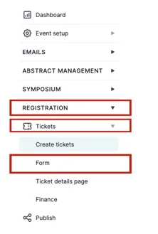
On the next screen, you will see Name and Email are already toggled on, and this comes as standard, as you’ll need attendees' names and email addresses.
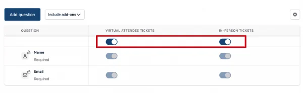
To add a question to your form, select Add Question at the top right of the table.
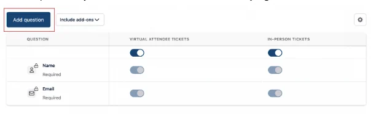
On the next screen, you will see the options available for you to add to your form.
These can include attendees:
- Selecting a tick box for your question
- Selecting an answer from a drop-down list
- Writing their answers in a text box (either short or long)
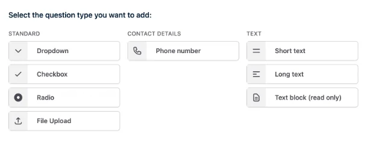
If you would like to use a Dropdown Box as a way for attendees to answer your questions, you do the following (this is the same process for all of the question options above).
Click on the Dropdown Box.
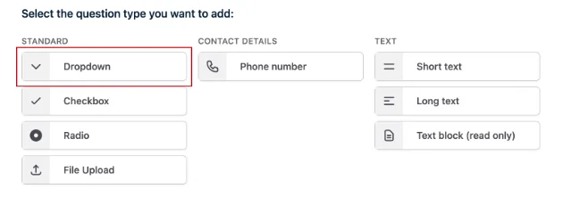
On the next screen, you can add the question to the Question Box.
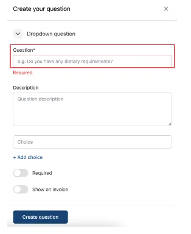
Include a description of your question if necessary.
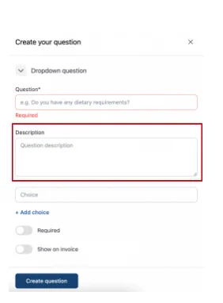
Then add the answer choices individually and click on +Add Choice.
I.e. type in YES and then click +Add Choice.
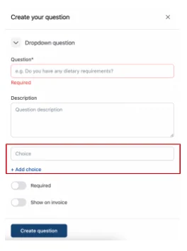
You then click on the toggle for Required to ensure it is added to the form.
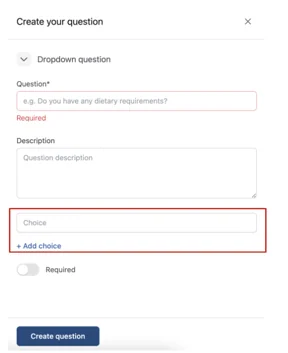
Finally, click on Create Question at the bottom of the screen.
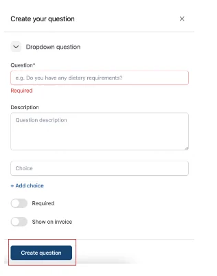
You can now see your question has been added.
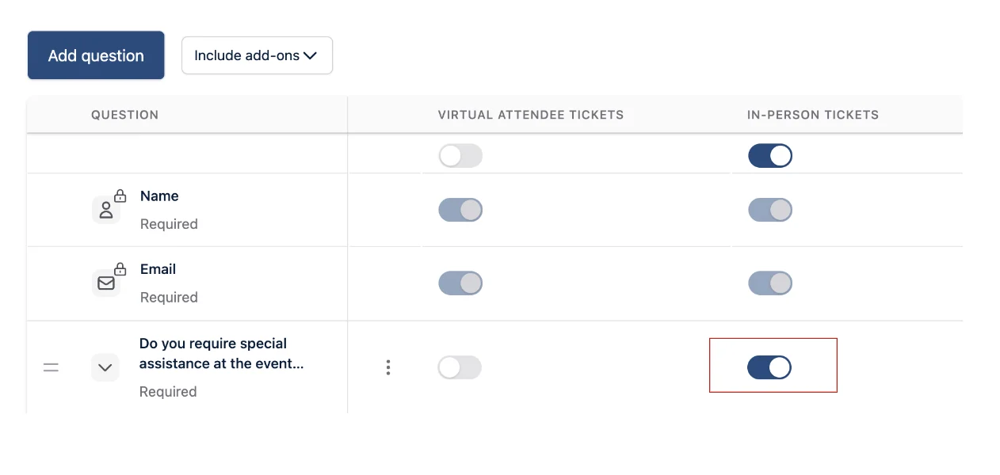
Next, you need to add it to the right ticket by clicking on the toggle button under the correct ticket title.**
For this example, the question only needs to be added to the In-person ticket.
You can now see the toggle is “ON”.
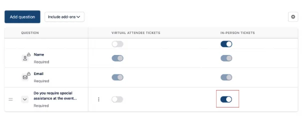
If you need to make any changes, you can select the three dots next to the question and click on Edit or Delete.
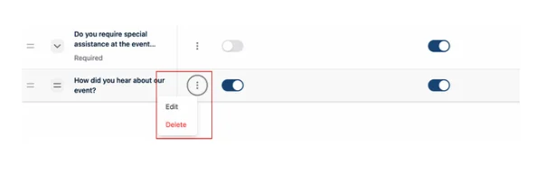
How to add a Short Text Question
Click on Add Question and then click on Short Text Question.
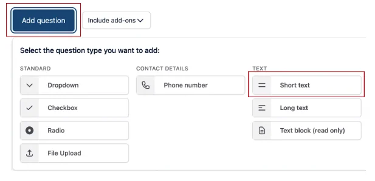
On the next screen, you will need to add the question and include a description (to clarify your question further if necessary).
You can then set a character limit if necessary. If left blank, there will be an unlimited character limit.
Then click the Required toggle to on and click Create Question at the bottom of the screen.
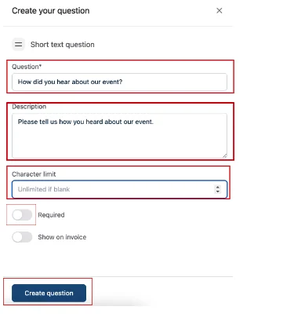
You can now see your question has been added.
Next, you must add the question to the right ticket by clicking on the toggle button under the correct ticket title.
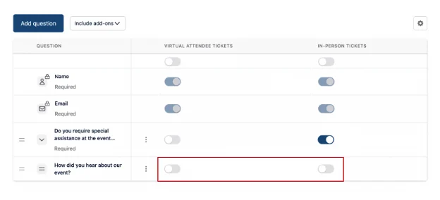
For this example, the question can be added to both sets of tickets.
When you click the toggle on, an Edit screen will appear (you can make amendments if necessary), and you will need to click Save.
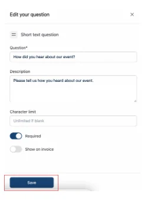
If you need to make any changes, select the three dots next to the question and click on Edit or Delete.
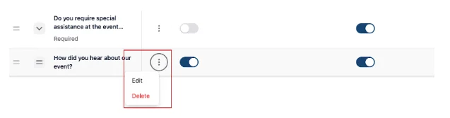
How to include questions for Add-Ons
To add questions for Add-Ons from your main dashboard, navigate to the column on the left-hand side, scroll down to Registration and click on the arrow next to it.
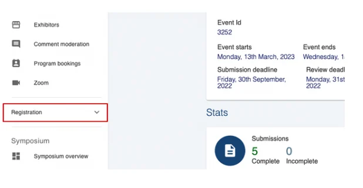
Next, click on Form under the Registration heading.
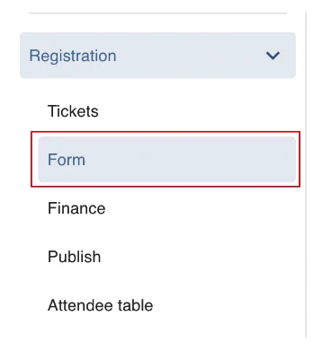
At the top of the screen, click on Include Add-Ons.
A drop-down box will appear for you to select via a tick box which Add-Ons you would like to add questions to.
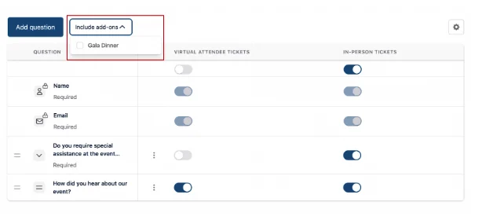
You will now see the Add-Ons you have selected added to the question dashboard.
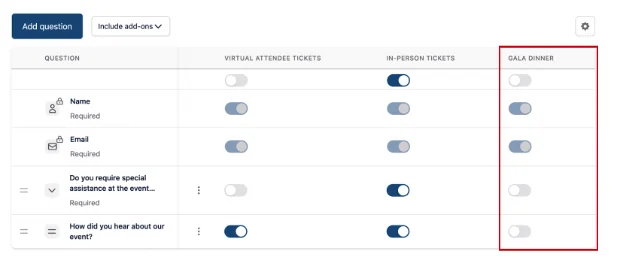
From this dashboard, you can toggle on or off any questions you have already created to be added to your add-on.
Creating a question for the add-ons is the same process you go through for adding questions for your delegate registration form.
Please follow the instructions above.
Remember, once your question has been created, you need to toggle it ON under the right column.
For example, you’re asking for dietary requirements for those attending the Gala dinner.
You will need to toggle the question to ON for the In-Person Tickets column and Gala Dinner column.
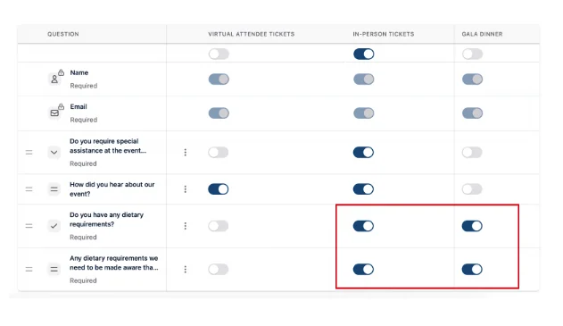
Should you require any further assistance, please contact our support desk via our Contact Form.
Didn't solve it? Ask our support team
No question is too small, and there's no charge for asking. Raise a ticket and someone who knows the software will pick it up.
Did this page solve it?
Thanks — this helps us fix it.